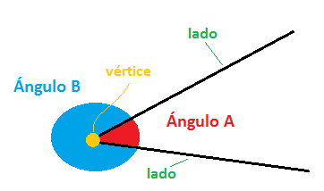
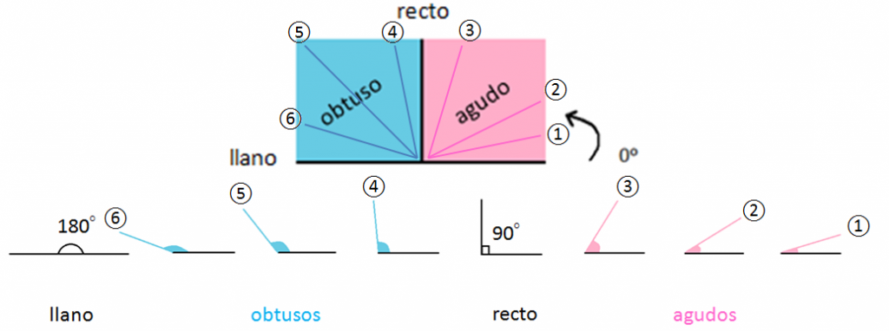

Ángulos
¿Qué es un ángulo?
Un ángulo es la porción del plano comprendida entre dos semirrectas que tienen un origen común.
¿Cuáles son las partes de un ángulo?
En un plano, dos semirrectas con un origen común siempre generan dos ángulos.
En el dibujo podemos ver dos, el A y el B. Los cuales están compuestos por dos lados y un vértice en el origen cada uno.

Tipos de ángulos
Hay varios tipos según su tamaño, es decir, en función de los grados que tenga:
Ángulo agudo: Mide menos de 90° y más de 0 °.
Ángulo recto: Mide 90° y sus lados son siempre perpendiculares entre sí.
Ángulo obtuso: Mayor que 90° pero menor que 180°.
Ángulo llano: Mide 180°. Igual que si juntamos dos ángulos rectos.
Con una imagen lo verás más fácil. Todo ángulo comprendido en la zona rosa es un ángulo agudo, y todo ángulo comprendido en la zona azul es un ángulo obtuso.
